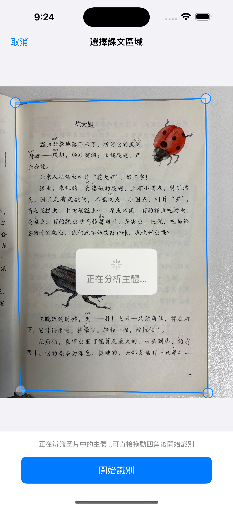
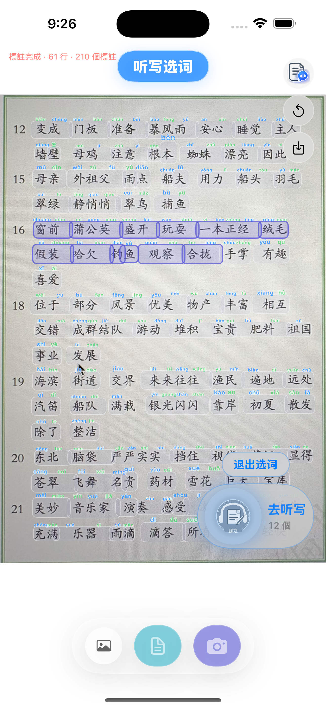
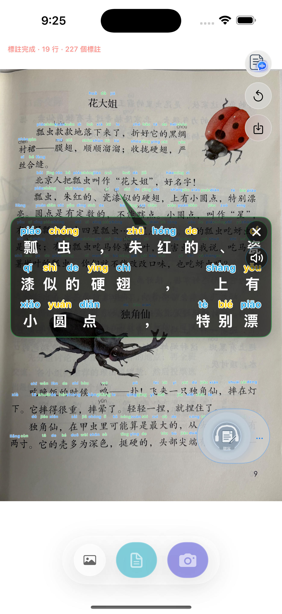
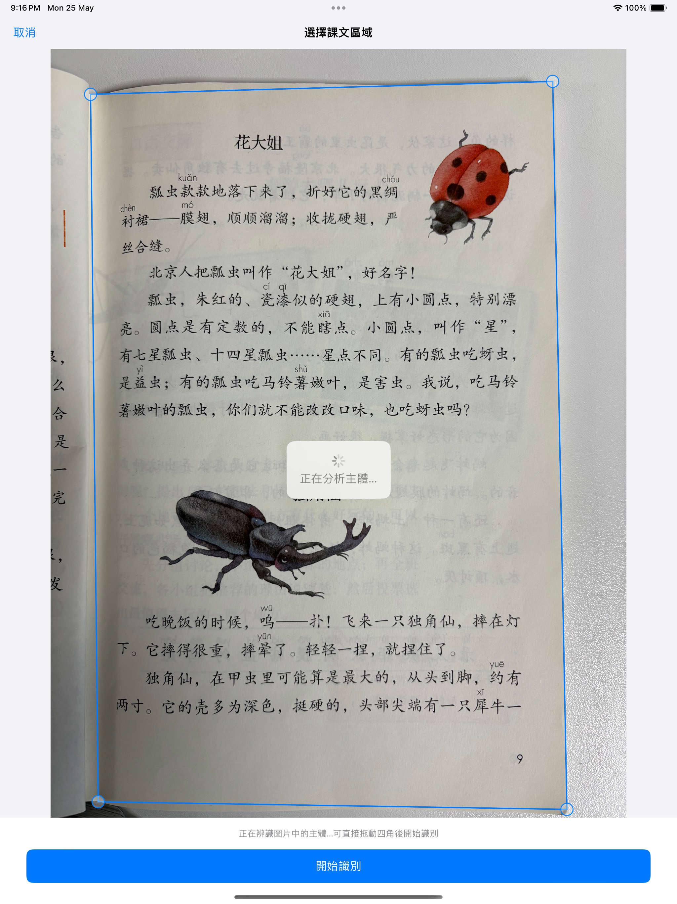

新增放大阅读与全文朗读
识别完成后，可点按查看当前行的放大阅读浮窗，也可按课文顺序全文朗读，适合跟读和检查生字词。
- 点按后放大查看当前行
- 按阅读顺序朗读整页内容
- 更适合较长课文的通读与复习
新增阅读辅助与选词听写，并把相册导入、直接拍照后的课文区域识别做得更稳、更好调。
拼音相机会在设备本地完成图片识别、拼音标注与听写准备流程，适合课文阅读、词语复习和课后练习。
App Store 审核通过后，可通过 App Store 链接或二维码下载。


这次版本围绕“看得清、选得准、练得顺”做了三组用户可见更新。
识别完成后，可点按查看当前行的放大阅读浮窗，也可按课文顺序全文朗读，适合跟读和检查生字词。
在标注结果上直接滑动圈词，进入听写列表后可调整读速、读词间隔与顺序，让课后练习更顺手。
从相册导入或直接拍照后，应用会先分析课文主体，自动给出识别区域；如果不满意，可以拖动四角微调再开始识别。
推荐从相册导入或直接拍照开始，确认课文区域后再进入标注、阅读和听写步骤。
从相册导入或直接拍照后，应用会自动分析图片中的主要课文区域。若边缘或倾斜不理想，可拖动四角调整。
识别完成后会自动为汉字标注拼音。点按内容可放大阅读当前行，也可使用全文朗读辅助整页通读。

在 OCR 结果页滑动圈出要练的词语，点“去听写”后即可进入词语列表，继续调整读速、间隔和顺序。

以下为 2.2 版本在 iPhone 与 iPad 上的实际界面截图。
拼音相机坚持以本地处理为主。图片识别、课文区域分析、拼音标注与听写准备都在设备端完成，不会把图片内容上传到开发者服务器。
二维码对应 App Store 下载链接。审核通过后，可直接扫码安装。